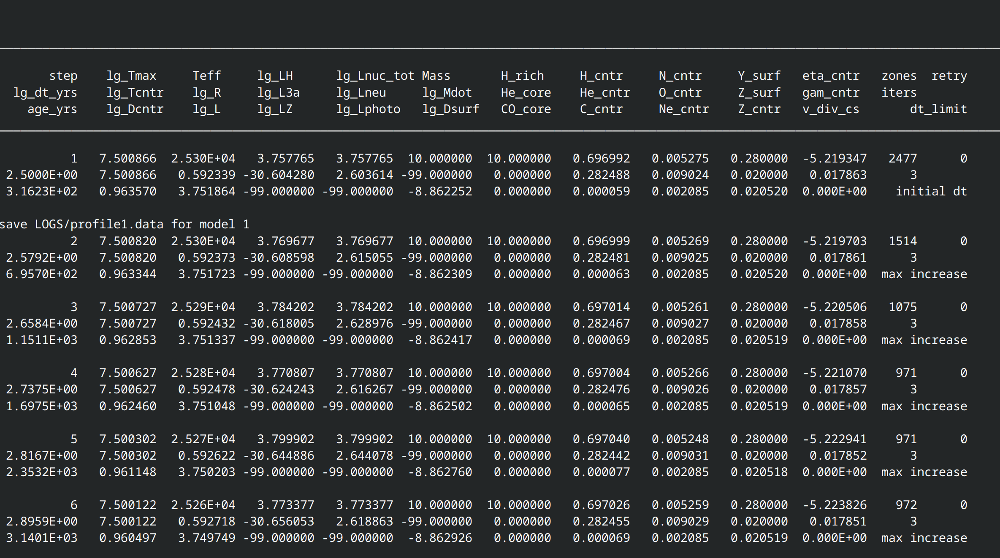

Objective of this lab is to perform convergence testing, a standard good practice in numerical simulations which ensures that results are resolution independent. In particular we will model a single star through the main sequence and see possible variations in its final helium core mass.
You will need to download the provided template from here, which contains small adjustments from the standard work directory for single star simulations provided by MESA. In particular in inlist_project you will find this under the &controls section:
&controls
...
! mixing
overshoot_scheme(:) = 'step'
overshoot_zone_type(:) = 'burn_H'
overshoot_zone_loc(:) = 'core'
overshoot_bdy_loc(:) = 'top'
overshoot_f(:) = 0.11d0
overshoot_f0(:) = 0.01d0
! timesteps
time_delta_coeff = 1.0
! mesh
mesh_delta_coeff = 1.0
...
/The above defines a certain amount of overshoot above the convective core during core hydrogen burning, which is generally good to include not just due to physical but also for numerical reasons. This exercise will however be mostly concerned with the two options time_delta_coeff and mesh_delta_coeff. These two allow one to scale all options that regulate either temporal or spatial resolution respectively, with larger values implying poorer resolution.
To start this lab, make sure to compile your work directory by running:
./clean && ./mkin a terminal located inside the folder. This will create the star executable. After this you can run this simulation by doing
./rn | tee out.txtThe tee command allows to save terminal output to a file while still displaying the output in your terminal. I normally recommend executing things this way as useful info can be contained in the terminal output.
Your run should produce output in the terminal that looks like the following
__________________________________________________________________________________________________________________________________________________
step lg_Tmax Teff lg_LH lg_Lnuc_tot Mass H_rich H_cntr N_cntr Y_surf eta_cntr zones retry
lg_dt_yrs lg_Tcntr lg_R lg_L3a lg_Lneu lg_Mdot He_core He_cntr O_cntr Z_surf gam_cntr iters
age_yrs lg_Dcntr lg_L lg_LZ lg_Lphoto lg_Dsurf CO_core C_cntr Ne_cntr Z_cntr v_div_cs dt_limit
__________________________________________________________________________________________________________________________________________________
1 7.500866 2.530E+04 3.757765 3.757765 10.000000 10.000000 0.696992 0.005275 0.280000 -5.219347 2477 0
2.5000E+00 7.500866 0.592339 -30.604280 2.603614 -99.000000 0.000000 0.282488 0.009024 0.020000 0.017863 3
3.1623E+02 0.963570 3.751864 -99.000000 -99.000000 -8.862252 0.000000 0.000059 0.002085 0.020520 0.000E+00 initial dt
save LOGS/profile1.data for model 1
2 7.500820 2.530E+04 3.769677 3.769677 10.000000 10.000000 0.696999 0.005269 0.280000 -5.219703 1514 0
2.5792E+00 7.500820 0.592373 -30.608598 2.615055 -99.000000 0.000000 0.282481 0.009025 0.020000 0.017861 3
6.9570E+02 0.963344 3.751723 -99.000000 -99.000000 -8.862309 0.000000 0.000063 0.002085 0.020520 0.000E+00 max increaseIn particular you can see this provides the model number (titled step) as well as the number of zones in the model. It also provides the helium core mass, which internally is defined as the mass coordinate where the hydrogen mass fraction drops below . Since the model starts at the main sequence, this is undefined and reported as zero at the beginning.
You will also see that there is live plotting running showing useful information of your run:

Now let your simulation go forward until it hits the termination condition placed in inlist_project, which is to stop once the hydrogen mass fraction goes down below . When that happens, write down the final helium core mass, and the number of zones and timesteps. Take the time to also explore the output files produced by MESA in the LOGS directory.
Now we wish to see how does the final helium core mass depend on resolution. To assess this, perform a grid of calculations while varying time_delta_coeff and mesh_delta_coeff, by scaling it up and down by factors of 2. The idea is to find a compromise resolution, where increase in resolution (either temporal or spatial) does not change the end result significantly. After each run, record the values used for the two parameters, as well as the final helium core mass, number of timesteps and number of zones. Verify that the resolution increased as expected.
You can discuss with your classmates how to approach the problem, what values to consider and also, if you feel cooperative, split the task. Whoever has the most powerful computer can run the highest resolution simulations. After obtaining all results visualize the outcome and make a decision on what resolution choice would be appropriate without being unnecesarily expensive.